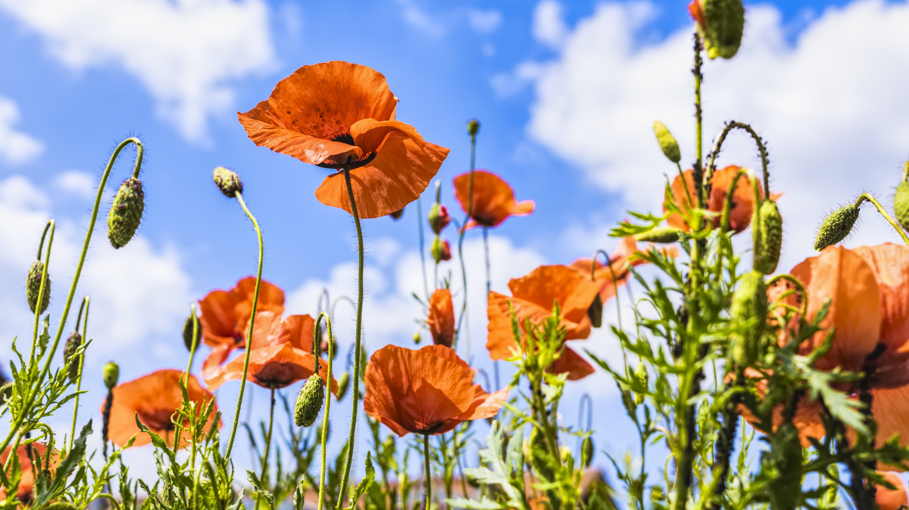

While some consider it to be a weed, it's as significant a flower as every other species in our beautiful world. It can be distinguished as a single, small, red flower atop its stem, and generally grows in fields. It's taken on a legacy as a symbol of military remembrance, with Papaver rhoeas being the particular poppy known as the remembrance poppy.